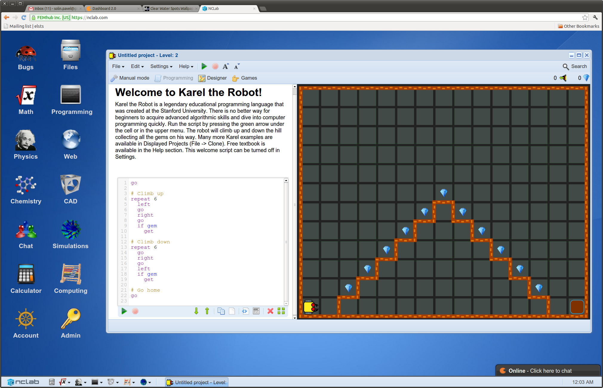

First Course in Programming
with Karel the Robot
Author: Pavel Solin et al.Publisher: FEMhub Inc.
Download Textbook, Exercises and Review questions: PDF, 3.2 MB.
Exercises are also available as displayed projects in NCLab.
Solution Manual (PDF, 1.5 MB) is also available in NCLab.
Visit NCLab
Visit NCLab for unrestricted Karel, Python and Javascript programming in the web browser, computing with Octave and CUDA, CAD modeling, web design, and more. Usage is completely free for public projects and it includes up to 10 MB storage.For Contributors
The textbook is open to contributors. If you like to contribute with a bugfix, example, section or chapter - you are very welcome. Every contributor automatically becomes a co-author. If you like to contribute, please contact Pavel Solin with a brief description of your idea. You should be able to use Latex and Git (Github). The following workflow is generally followed:- Create a free account at Github if you do not have one already.
- Fork the public repository "femhub/nclab-textbook-karel" into your account.
- Clone your fork into your own computer or laptop.
- Create a branch for your edits, do your edits, commit them, push them into your Github repository, and generate a pull request.
- You will hear from us!
Other Free NCLab Textbooks

